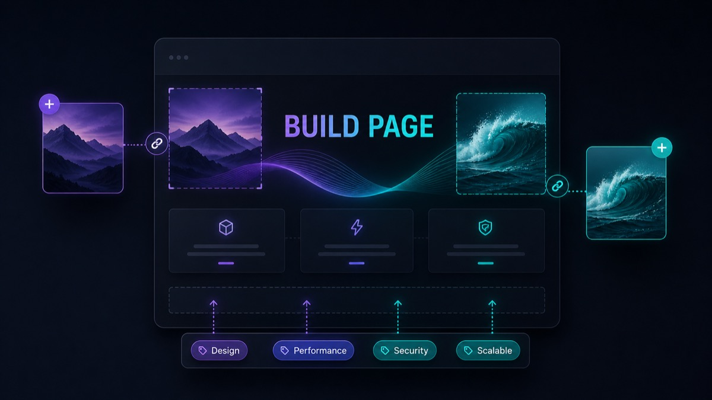

Idea Forge
Get an idea out of your head and onto a page worth showing someone — the AI listens first, sharpens second, and builds last.
What This Is
Idea Forge is a set of six AI skills that turn a raw idea — a business, a product, a concept you need out of your head — into a single beautiful HTML page: images generated to match, every reference linked, tagged, and shareable as one folder.
The point isn't the page. The point is that by the time the page exists, the idea has survived an interview. The AI doesn't write down your first draft; it makes you answer for it, one question at a time, and then lays out what you actually meant.
Installing It (One Instruction)
There is nothing to configure, no folders to drag, no terminal commands to run. You hand one file to your AI and it does the rest — on whatever AI you use.
installer.md to your AI — share the file, or paste its text into the chat — and say: install idea forge. That's it. The installer looks at what AI it's talking to and sets Idea Forge up the right way for that one, then walks you through a quick first run.
It adapts to whatever you have:
- A coding assistant in a terminal (Claude Code, Codex) → it installs the six skills to files on your machine and makes your ideas folder.
- The Claude app (web, desktop, or phone) → it builds the skill uploads for you and hands them over with the exact steps to turn them on.
- A ChatGPT Project or Gemini Gem → it condenses the whole pipeline into instructions you paste once.
- A plain chat → it loads the pipeline right into the conversation.
Not sure how to get installer.md in front of your AI in the first place — iPhone, Windows, or Mac? Open START-HERE.md from this package first; it's one page of tap-by-tap steps for your device. Then come back here for how the pipeline works.
The Pipeline
Four stages. You can invoke any one directly, but idea-forge conducts — it figures out where your idea is and moves it along.
Spit · spitball-session
Talk the idea out, messy and unfiltered. The AI listens, reflects, maybe challenges — but touches nothing. No searches, no files, no "let me draft a plan real quick." Detail and excitement are not permission; only your action words are.
Shape · grilling / grill-me
The interview. One question at a time — never a wall of ten — each with the AI's recommended answer attached. Facts it can look up, it looks up; decisions are yours, and it waits for each one. It ends when you both agree what the idea actually is, out loud.
Map · wayfinder · optional
For the BIG ones — ideas with so many open questions that one sitting can't hold them. Wayfinder names the destination, then charts the open decisions as tickets in a map folder. Each session you resolve one ticket; the fog clears a patch at a time until the whole route is visible. Skip this entirely for ideas that fit in an evening.
Build · idea-page
The payoff. Your shaped idea becomes a single self-contained dark-mode HTML page: a hero image and section art generated to match the page's palette, every reference and competitor linked, tags for scanning your collection, open questions kept honest in their own section. It opens in your browser when it's done — and it looks like this page, because this page was built with the same template.

Cheat Sheet
| You want to… | Say | What happens |
|---|---|---|
| Start from scratch | I have an idea — idea forge | The conductor meets your idea wherever it is and runs the stages |
| Just vent an idea | spitball session | Pure listening mode; nothing gets touched until you shift gears |
| Pressure-test it | grill me on this | One-question-at-a-time interview until shared understanding |
| Tame a monster idea | map this out | Wayfinder charts tickets; one decision resolved per session |
| Get the page | build the page | Dark-mode HTML with images, refs, tags lands in ~/Documents/ideas/ |
| Revise later | update the <name> page | Surgical edit + a dated entry in the page's Amendments log |
| Change the look | restyle my pages — <describe it> | Your description becomes the saved theme; new pages (and old ones, if you say so) use it |
| Come back to an idea | idea forge — <name> | It checks the idea's folder and resumes at the right stage |
| Bring one home from the car | idea forge — here's my brief: … | Paste the idea brief from your phone session; it resumes at the right stage |
Where Your Ideas Live
One idea, one folder, under ~/Documents/ideas/ (it asks once on first run, then remembers):
~/Documents/ideas/
night-market-app/
index.html ← the page — open or share it
images/ ← its generated art (+ favicon source)
map/ ← wayfinder map + tickets, if the idea needed one
coffee-subscription/
index.html
images/Each folder is self-contained — zip it, AirDrop it, email it. The page carries its own styling and points at its images with relative paths, so it survives the trip. Related ideas cross-link to each other, so over time the folder becomes your personal idea wiki.
Car Mode (The Phone App)
Ideas don't wait for a desk. Once Idea Forge is installed on the phone app you use, the whole pipeline rides along — spit, grill, even build the page. Prefer to finish on a bigger screen? A one-message idea brief carries the idea to any other session.
One-time setup
- Install Idea Forge once, the one way it always installs: hand
installer.mdto your AI in the phone app and sayinstall idea forge. If your AI account is shared between your phone and computer, it's set up in both.
The car workflow
- In the car, open your AI app and say
spitball session. Talk. It listens and keeps replies short and speakable. - Feeling sharp? Say
grill me— same one-question-at-a-time interview, sized for voice. - Before you get out:
give me the brief. It produces one structured message — the idea brief — with everything: the idea, the decisions, every link and name you mentioned. - Later, at the computer: copy the brief, open Idea Forge there, and say
idea forge — here's my brief:and paste. A spitballed brief resumes at shaping; a fully shaped one gets a quick confirmation and goes straight to the page build.
Getting Good Results
- Don't skip the grilling. A page built from an unshaped idea is a guess in a nice suit. The interview is where the idea earns its page.
- Drop links while you talk. Every URL, competitor, or article you mention during spit/shape gets captured into the page's References section — receipts included, automatically.
- Answer the question asked. The AI brings a recommended answer to every question; disagreeing with it is often where the idea gets interesting.
- Let it say "this one's big." If shaping starts sprawling into dozens of branches, take the wayfinder offer — five short sessions beat one four-hour slog.
- Update, don't regenerate. When the idea evolves, say update the page — edits are surgical and the Amendments section keeps the history.
- Make the style yours. The dark look on this page is just the default. On first run it asks what you want — or any time later, say restyle my pages: warm paper, serif, terracotta accents (or whatever you like) and every page from then on wears it. The generated images follow your palette too.
Troubleshooting
installer.md with your AI and say continue install. The installer picks up where it left off and adapts to your AI. You never re-do steps by hand.
Images didn't generate / the page has placeholder boxes
Some AIs make real picture files, some make crisp designed artwork instead — the installer picks the best one yours can do and records it. If a page came out with empty image spots, just tell your AI "fill the images on the <name> page". Artwork can take a minute or two per image.
The skill doesn't trigger when I say the magic words
Re-share installer.md and say continue install — it re-checks the setup and finishes anything missing. You can also invoke a stage by name explicitly: "use the idea-page skill".
Can I do this from a phone app?
Yes. Install Idea Forge the one way it always installs — hand installer.md to your AI in the phone app and say "install idea forge" — and the whole pipeline runs there. See Car Mode above.
Where did my page go?
On a computer install, your pages live in the ideas folder you picked at setup (the default is your Documents → ideas folder) — every idea is its own folder with an index.html inside. In an app install, each page arrives as a download right in the chat. If you're not sure where yours went, ask your AI "where do my idea pages live?"
I want the pages somewhere else
Just tell your AI "put my idea pages in <folder> from now on" — it updates the setting and uses the new place for every page after that.